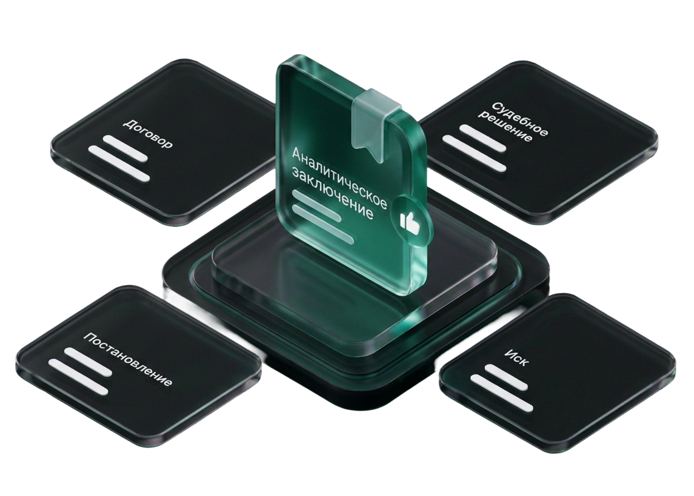

Аналитическое
заключение
- Результат остаётся в письменном виде
- Анализируются предоставленные документы
- Специалист отдельно изучает материалы
- Цель — оценка ситуации, рисков и сценариев
Изучим материалы уголовного, гражданского или административного дела и подготовим письменное аналитическое заключение: что происходит, какие есть риски и на что обратить внимание при дальнейших действиях.

Заключение готовится специалистами, имеющими практический опыт работы с юридическими делами.
Вы получаете не устную консультацию, а структурированное аналитическое заключение.
Фиксированный срок подготовки после получения необходимых материалов.
Документы доступны только специалистам, участвующим в подготовке заключения.
Услуга подойдёт, когда необходимо сначала разобраться в ситуации, оценить основные риски или проверить уже выбранную стратегию. Вы получаете письменный разбор, с которым сможете принимать дальнейшие решения и предметно обсуждать дело со своим адвокатом или представителем.